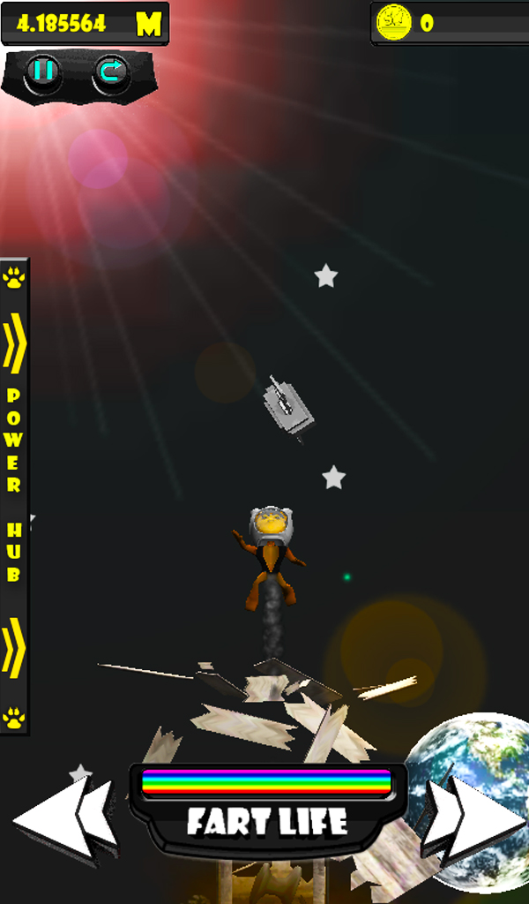

Neste postmortem conheça o jogo independente brasileiro Cat-Fly para Android e conheça os desafios enfrentados pelo desenvolvedor Cláudio Rainho para publicá-lo.
Como escrevi neste post, se você não publicou um jogo, você não fez um jogo. Apenas um jogo publicado tem uma história para contar em um postmortem, e só assim um desenvolvedor aprende todo ciclo de vida de um jogo como um produto. Leia abaixo o texto enviado pelo Cláudio e veja mais um exemplo de que não é fácil criar um jogo, e que publicar faz parte do processo.
1. Descrição do Jogo
Cat-Fly é um game casual desenvolvido para Android, o jogador pode escolher dentre vários gatinhos o seu preferido, a base dos acontecimentos do jogo acontece em volta de uma situação inusitada, o seu gatinho bebeu um leite um tanto quanto ruim e a dor de barriga apertou, ele corre para o banheiro mas algo estranho acontece, o banheiro ” Explode ” e o seu gatinho sai voando pelos ares, voe o mais alto possível com seu gatinho ” até mais alto que a Lua”
Mecanica do jogo.
A mecânica é simples você movimenta o seu gato de um lado para outro, precisa apenas recolher moedas e desviar de objetos que estão caindo, você possui um arsenal de powerUps que vão ajudar você a ir o mais alto possível. Dentro do jogo é possivel, comprar personagens, poderes e fases.
O jogo esta disponível gratuitamente na PlayStore para Tablets e Smartphone com Android. Baixe o jogo aqui: https://play.google.com/store/apps/details?id=com.crgamestudio.tut.catflyfree.
2. Dificuldades e Problemas
1) Desempenho
Bom, quem desenvolve para dispositivos sabe bem como isso é complicado,em Cat-Flyexistem objetos que se quebram, existem muitas partículas,e eu queria boas texturas com objetos 3D, no começo foi dificil adaptar o jogo para celulares moveis, dive que diminuir muito a qualidade dos objetos, as resoluções das texturas, e tirar objetos do jogo, tive que remodelar objetos das cenas diversas vezes, deus sabe o como isso foi cansativo, mas no final o jogo ficou razoável, porem não como eu esperava.
2) Desenvolver sozinho.
Eu particularmente gosto de fazer sozinho, mas não posso negar que isso da um trabalhão, eu como desenvolvedor indie não sei tudo e tudo que sei não é 100% mas nesse jogo tive quetrabalhar como tudo, desde desenho,animações,programação até a edição de áudio, o que mais me deu trabalho foi os efeitos sonoros e as musicas, e vou aproveitar o espaço para dar uma dica, porque tive dificuldade de achar bons efeitos sonoros e musicas que de fato fosse gratuitas, mas achei um site que permite a comercialização dos sons disponíveis nele, o nome do site é freesound.com, outros problemas em relação a trabalhar sozinho é o fato de que com o tempo você passa a odiar o seu jogo de tanto que teve que testa ele, mas faz parte.
3) Resoluções de aparelhos.
Eu estou desenvolvendo para Android faz pouco tempo mas, o que mais me deu trabalho foi trabalhar com resoluções,os aparelhos Android possuem uma grande variedade de resoluções e isso atrapalha um pouco,então tive que limitar meu jogo para aparelhos com uma tela maior ou igual a 4″, agora para o próximo projeto eu estou mais preparado para lidar com as resoluções .
4) Publicidade
Esse sim é um grande problema, eu como desenvolvedor independente sou um tremendo de um durango, não tenho recursos financeiros para investir em propaganda, então a parte de publicidade do jogo foi um grande problema,minha unica solução foi recorrer as redes sociais, entrei em todos os foruns e grupos relacionados a jogos e android, e divulguei neles mas isso me consumiu um bom tempo, e ainda sim não vai dar um retorno satisfatório, é como o meu pai sempre fala “Propaganda é a alma do negocio” eu demorei para entender isso.

3. Pontos Positivos
1) Aprendizado
O Aprendizado foi sem duvida o maior ponto positivo, aprendi tantas coisas novas nesse jogo que me sinto pronto para fazer outro jogo e melhor, atualmente eu tenho apenas dois jogos lançados oficialmente, mas dezenas espalhados pela internet, mas é possível reparar a evolução que tive de um jogo para outro foi incrível,em Cat-Fly eu me desafiei em algumas mecânicas do jogo,coisas que deram um trabalho danado mas foi incrivelmente proveitoso e o fato de ter ganhando experiência,, agora posso ver claramente os erros que cometi no primeiro e ja vejo outros erros que cometi no Cat-Fly e esses erros serão evitados nos próximos projetos.
2) Satisfação Pessoal
Sem duvidas a Satisfação Pessoal é grande, eu desenvolvo games desde os meus 13 anos mas nunca fiz nada completo, agora com o segundo jogo lançado na PlayStore me sinto ótimo e pronto para outro.
3) Novas Ideias
O que Cat-Fly mais rendeu foi novas ideias, o desenvolvimento do jogo me obrigou a pesquisar diversas coisas que me geraram um bom conhecimento e bagagem para um próximo game também relacionado a animais, e a experiencia que eu tivo junto com os conselhos que recebi, estou convencido a investir meu tempo em um projeto mais comercial, seguindo a tendencia, infelizmente não posso falar dele mas quem quiser ficar por dentro é só curtit essa pagina nofacebook: https://www.facebook.com/crgamestudio
Download do Cat-Fly FREE
https://play.google.com/store/apps/details?id=com.crgamestudio.tut.catflyfree
Para finalizar,quero agradecer o ao Bruno Cicanci, muito obrigado pelo espaço e oportunidade e agradeço a todos que leram.
Claudio Rainho

Esta é uma sessão do blog dedicada a mostrar exemplos de pessoas que conseguiram tirar sua ideia do papel e fizeram um jogo, o texto é escrito pelo desenvolvedor e publicado aqui da mesma maneira que recebo. Se você já publicou um jogo e tem interesse de contar como foi o processo de desenvolvimento entre em contato para saber mais sobre o postmortem.